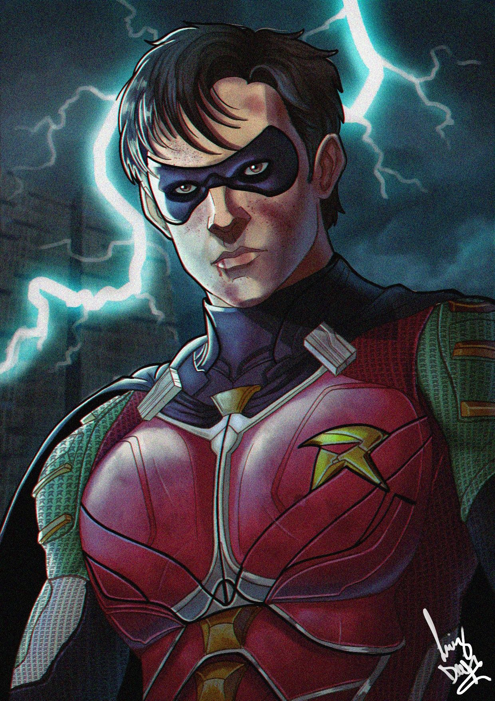

Robin, el personaje de DC Comics, ha sido una figura central en las historias de Batman desde su creación. Originalmente, Dick Grayson fue el primer Robin, debutando en Detective Comics #38 en 1940. Con el tiempo, Robin ha sido interpretado por varios personajes, incluyendo a Jason Todd, Tim Drake, Stephanie Brown, Damian Wayne, y más recientemente, Damian Wayne. Cada uno de estos Robins ha aportado su propio estilo y habilidades a la tradición de ayudar a Batman en sus aventuras.
nacido en:15 de enero de 1982
estado civil: solterono tiene hijos
nombre: Dick Grayson
padres:jhon y Mary Grayson
niñez adolescencia adultez